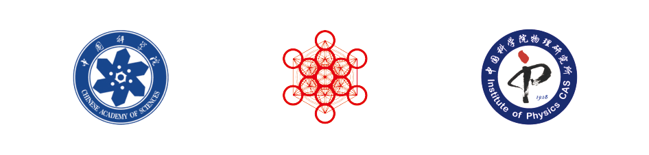

简介
量子引力是高能理论物理的重要研究方向，对于完整理解自然界基本作用的量子力学本质提出了重大的挑战。 在众多相关的课题中，由黑洞热力学以及霍金辐射所引发的黑洞信息问题是关于广义相对论和量子力学的相容性问题最尖锐的体现，是国际学界长期以来试图解决的重大难题。 多年来围绕该问题的研究涉及并启发了包括量子场论，超弦理论，规范引力对偶，量子纠缠与量子混沌等在内的众多具体问题和理论的进展，也因此成为了推动高能理论物理整体前进的核心问题。 近期，国际学界取得了一系列重大的进展：其中以2019年底基于副本虫洞（replica wormhole）构造而提出的岛屿法则（island rule）为结点， 标志着学界对黑洞信息问题中关于霍金辐射佩奇曲线后半段的理解取得了阶段性突破；这部分进展备受国际瞩目，部分参与学者也因此获得了今年的新视野奖。
中国科学院大学卡弗里理论科学研究所作为重要的国内外学术交流平台，计划举办本次线下的夏季学校，组织国内相关兴趣的研究人员学习并讨论相关的最新进展。 本次夏季学校计划面向的对象是具有一定基础的中高年级研究生，以及包括博士后在内的青年研究人员，预计人数60人左右。 通过本次夏季学校，旨在帮助国内相关研究者尽快跟进最新进展，理解进展背后的核心思想，掌握最新的计算技巧及框架，为推进国内在该领域具有国际水平的原创性研究铺垫基础。
本次夏季学校主要由三部分报告组成：1. 由国内的优秀青年学者（何松，雷扬，潘逸文，田佳，邵立晶，张甲举）主讲的关于引力、黑洞问题的lectures （每天三节，每节1.5小时）； 2. 由嘉宾主讲的特邀报告（每天一个，1-1.5小时，报告内容偏综述性质）； 3. gong show形式的学生报告（共两轮，每轮1.5小时）。
本次夏季学校由Kavli基金会和中国科学院大学资助。本次授课语言为中文。
课程讲师和课程内容
- 何松 (吉林大学) - Entanglement and holography 视频1 \ 视频2 \ 视频3 \ 视频4
- 雷扬 (国科大 KITS) - Information paradox and black hole microstate counting 讲义 \ 视频1 \ 视频2 \ 视频3 \ 视频4
- 潘逸⽂ (中⼭⼤学) - Conformal field theory 讲义1 \ 讲义2 \ 讲义3 \ 讲义4 \ 视频1 \ 视频2 \ 视频3 \ 视频4
- 邵立晶 (北京大学KIAA) - Gravitational wave physics 讲义1 \ 讲义2 \ 讲义3
- ⽥佳 (国科大 KITS) - Jackiw–Teitelboim gravity and Island formula 讲义 \ 视频1 \ 视频2 \ 视频3 \ 视频4
- 张甲举 (天津⼤学) - Information theory 讲义 \ 视频1 \ 视频2 \ 视频3 \ 视频4
特邀讲座
- Bartlomiej Czech （清华大学）视频
- 卢建新 （中国科学技术大学）视频
- Douglas Stanford (Stanford University) -- 线上嘉宾 视频
- 杨镇斌 （Stanford University） -- 线上嘉宾 视频
- 任杰 （中山大学）视频
- 张扬 （中国科学技术大学）视频
- 周洋 （复旦大学）视频
注册
注册请点击 这里。 注册截至时间是2021年6月28日。本次夏季学校没有注册费，交通费用自理。
课程统筹
- 雷扬（KITS）
- 田佳（KITS）
- 吴洁强（MIT）
学校组织
- 彭程 (中国科学院大学卡弗里理论科学研究所)
- 孙雅文(中国科学院大学)
- 王华嘉 (中国科学院大学卡弗里理论科学研究所)
赞助
- 中国科学院大学
- 卡弗里基金会
- 中国科学院物理研究所
- 长三角物理研究中心
